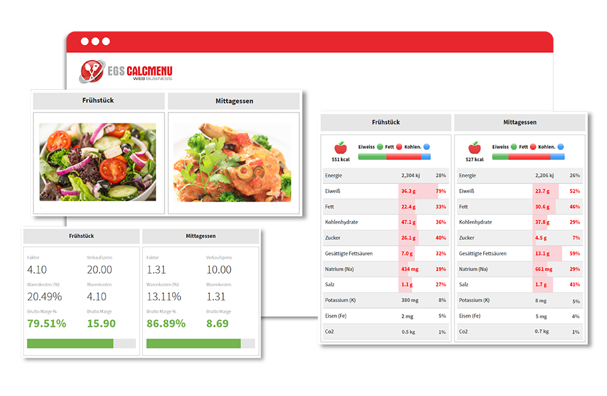

Modernisierung Ihres Küchenmanagementsystems
Chefköche, Restaurantbesitzer und Gastronomen, die Rezepte verwalten und Menüs planen, wissen, dass dies ein zeitaufwändiger Prozess ist - und doch ist er ein entscheidender Faktor für den Erfolg ihres Unternehmens.
Mit der Technologie an der Spitze des Geschäftswachstums wenden sich viele Restaurants, Hotels und Caterer an Softwarelösungen, um die täglichen Verwaltungsaufgaben zu automatisieren, die Effizienz der Lebensmittelproduktionsprozesse zu steigern und die allgemeine Gästezufriedenheit zu erreichen.
Ganz gleich, ob Sie im Hotel-, Catering- oder Gaststättengewerbe tätig sind, wir können Ihnen helfen, verschiedene Teile Ihrer Arbeitsabläufe zu integrieren und zu digitalisieren, um prozessbedingte Ineffizienzen zu beseitigen. Somit können Sie Ihre Küche effizient verwalten und Ihre Geschäftsabläufe verbessern.

ÄNDERN SIE DIE ART UND WEISE, WIE SIE REZEPTE UND MENÜS VERWALTEN
Sie haben nicht die Zeit, Ihre Rezepte manuell zu verwalten, um Konsistenz und Qualität zu gewährleisten? Sie fragen sich, wie Sie die besten Preise für den Verkauf Ihrer Lebensmittel ermitteln können, um erfolgreich zu sein? Sie suchen nach einer Möglichkeit, Lebensmittelabfälle zu reduzieren und Nachhaltigkeit zu praktizieren?
Wir haben genau das, was Sie brauchen. EGS CALCMENU Web ist eine fortschrittliche webbasierte Rezeptverwaltungssoftware, die für Ihre Großküche entwickelt wurde. Wir haben uns darauf spezialisiert, Ihre Rezeptverwaltung zu modernisieren und Ihnen dabei zu helfen, Rezepte zu standardisieren, Rezeptkonsistenz zu erreichen, Nährwertanalysen zu erstellen, Maßnahmen zur Lebensmittelsicherheit zu gewährleisten und die Menüplanung zu vereinfachen, um nur einige Beispiele zu nennen.
EGS CALCMENU Web bietet Ihnen die richtigen Werkzeuge, um verschiedene Teile Ihres Arbeitsablaufs zu integrieren und zu digitalisieren sowie prozessbedingte Ineffizienzen zu beseitigen. Unsere zentralen Küchen- und Geschäftsmodelle für mehrere Filialen oder Standorte geben Ihnen die Möglichkeit, Rezepte und Warendaten zu standardisieren, um eine gleichbleibende Qualität zu gewährleisten und gleichzeitig die Kosten zu kontrollieren, profitable Menüs und Menüpläne zu erstellen. Es können ebenfalls Lebensmittelabfälle reduziert werden, Lebensmitteletiketten in Übereinstimmung mit den staatlichen Lebensmittelgesetzen gebracht werden und vieles mehr, um ein effizientes Küchenmanagement zu erreichen.
Unternehmen wie das Ihre können die Rezeptverwaltung auf einem Server zentralisieren und dennoch die individuellen Anforderungen jeder Filiale, jedes Standorts erfüllen. Filialen an verschiedenen geografischen Standorten können die Standardverfahren, die Portionierung und die Präsentation für alle Ihre zubereiteten Speisen verwenden und befolgen.
BESSER, SCHNELLER UND INTELLIGENTER ARBEITEN.
Unser intelligentes Rezeptmanagementsystem EGS CALCMENU Web besteht aus vier Hauptmodulen:
WARENVERKAUF
In unserem Warenmodul finden Sie alle Zutaten, die Sie verwenden können. Sie können alle Ihre Rohstoffe erstellen und verwalten, indem Sie die Ware nach Name, Anzahl, Kategorie, unbegrenzter Anzahl von Schlüsselwörtern, Preis in verschiedenen Einheiten, Lieferant, Prozentsatz des Abfalls und Steuersatz definieren.
Bilder, Nährwertangaben und andere ergänzende Informationen können ebenfalls zu den Waren hinzugefügt werden.
REZEPTE
Mit diesem Modul können Sie neue Rezepte erstellen, Rezepte suchen und Ihre Lieblingsrezepte anzeigen, bearbeiten und speichern.
-
REZEPTVERWALTUNG
Ein Rezept enthält folgende Angaben: Rezeptname, unbegrenzte Anzahl von Schlüsselwörtern, Bemerkungen, Kategorie, flexible Ausbeute, Einheiten (Portionen, Liter, kg, Stück), Aufschlagfaktor (Konstante, Bruttogewinn oder Prozentsatz der Lebensmittelkosten), Verfahren, Datum der letzten Aktualisierung, Steuersatz, vorgeschriebener Preis, Rezeptquelle, HACCP und andere Zusatzinformationen.
Sie können ganz einfach mit Hilfe von Schlüsselwörtern und anderen Filtern nach Rezepten suchen. Rezepte können auch als Unterrezepte in anderen Rezepten verwendet werden.
Sie benötigen gedruckte Rezepte? Wir stellen Ihnen verschiedene Vorlagen und Formate zur Verfügung, aus denen Sie wählen können, oder fordern Sie eine benutzerdefinierte Vorlage* an, die Ihren speziellen Anforderungen entspricht.
-
REZEPT-KOSTEN
Verabschieden Sie sich von der manuellen Berechnung der Lebensmittelkosten.
Sie können die Größe des Rezepts ganz einfach ändern (indem Sie die Ausbeutemenge ändern) und unsere Softwareanwendung berechnet automatisch die Gesamtkosten der Zubereitung neu. Darüber hinaus werden die Rezeptkosten automatisch neu berechnet, wenn eine Zutat hinzugefügt oder entfernt wird.
Darüber hinaus können Sie den automatisch vorgeschlagenen Verkaufspreis auf der Grundlage der angestrebten Lebensmittelkosten oder Ihrer vordefinierten Gewinnspanne einsehen.
MENÜ
Wählen Sie Ihre Rezepte aus und fügen Sie sie hinzu, um Ihre Menüs zu erstellen - nutzen Sie dieses Modul, um Ihre Menüs effektiv zu verwalten und Ihre Umsatz- und Kostenanalyse zu ermitteln.
-
Vereinfachen Sie die Weitergabe von Informationen und die Werbung für Ihre Angebote an Ihre Kunden. Erstellen Sie visuell ansprechende eMenüs mit unseren Vorlagen und teilen Sie Ihre Tagesangebote oder Veranstaltungsmenüs für Bankette.
Laden Sie Ihre ausgewählten Menüs einfach mit fertigen Designs und Layouts, oder fordern Sie eine benutzerdefinierte Vorlage* an, die Ihren speziellen Anforderungen entspricht.
MENÜPLAN
Mit diesem Modul können Sie Ihre Menüs für ein bestimmtes Datum oder einen bestimmten Anlass im Voraus organisieren, Ihre Tagesgerichte planen, Ihre Menüs mit anderen teilen, die Gesamtkosten Ihrer Menüs ermitteln und Einkaufslisten mit allen Zutaten aus dem Menüplan erstellen, um den Einkauf zu erleichtern.
Optimieren Sie Ihre Gewinnspannen durch Menüprognosen. Bestimmen Sie Ihre Produktionsaufzeichnungen, den Personalbedarf sowie Zuweisungs- und Terminplanungsentscheidungen, indem Sie Ihre Menübedarfsschätzungen auswerten.
-
MENÜPLANANSICHT
Eine unserer fortschrittlichen Funktionen, die Menüplan-Ansicht**, bietet Ihnen Zugriff auf alle relevanten Daten und die Möglichkeit, Inhalte in Echtzeit anzuzeigen, damit Sie schnell und einfach den perfekten, ausgewogenen Speiseplan erstellen können.
Wir erleichtern Ihnen die Menüplanung durch unsere interaktiven Visualisierungen, die Ansichten für Allergene, Schlüsselwörter, Nährstoffe, Wetter, Preise, Gesundheit und Nachhaltigkeit, Fotos und Menüplanregeln enthalten.
MEHR ALS EINE KÜCHENMANAGEMENTLÖSUNG
In dem Bestreben, den Gästen stets das beste Erlebnis zu bieten, sind Zeitmanagement und Lebensmittelzubereitung entscheidende Komponenten eines gut geführten Restaurants oder einer Großküche.
Unsere Lösungen geben Ihnen die richtigen Werkzeuge an die Hand, damit Ihre Köche und Ihr Küchenpersonal in dieser schnelllebigen Umgebung mehr leisten können. Der Chefkoch, die Sous-Chefs, die Vorbereitungsköche, die Köche, der Küchenleiter und das übrige Küchenpersonal müssen konsequent aufeinander abgestimmt sein, damit die Back-of-House-Abläufe reibungslos funktionieren.
KIOSK FÜR CALCMENU
Der Kiosk für CALCMENU wird kostenlos mit Ihrer EGS CALCMENU Web-Lizenz geliefert. Es handelt sich um eine einfache Anwendung für Küchenpersonal, das Rezepte anzeigen, freigeben oder deren Größe ändern muss. Sie können den Kiosk für CALCMENU auch verwenden, um Einkaufslisten zu erstellen und Etiketten zu drucken.
Auf den Kiosk für CALCMENU können Sie jederzeit und überall von Ihren mobilen Geräten und Tablets aus online zugreifen.
EGS F&B CONTROL
EGS F&B Control ist ein komplettes Back-of-House-System, das speziell für das Gastgewerbe entwickelt wurde, um Unternehmen dabei zu helfen, die Lebensmittelkosten zu senken, die Geschäftseffizienz zu maximieren und die Rentabilität zu steigern. Durch die Optimierung der Bestandsverwaltung, der Verkäufe und der Berichte über Lebensmittelkostenabweichungen gibt Ihnen EGS F&B Control die volle Kontrolle über Ihr Unternehmen.
IHR ERFOLGSREZEPT
Unternehmen arbeiten nach unterschiedlichen Modellen, und es gibt keine "Einheitslösung" mehr, die den einzigartigen Anforderungen jedes Unternehmens gerecht wird.
In diesem Sinne haben wir personalisierte Dienstleistungen als perfekte Ergänzung zu unserer Rezepturverwaltungssoftware entwickelt, um Ihre spezifischen Anforderungen zu erfüllen.

ERWEITERTER DATENVERWALTUNGSDIENST (ADMS)*
Wir eliminieren die mühsame Aufgabe der manuellen Dateneingabe. Sparen Sie Zeit und Geld, indem Sie unsere Datenexperten Ihre Daten in EGS CALCMENU Web kodieren lassen und dabei nur die besten Praktiken und Strategien der Branche nutzen, indem Sie unseren Advanced Data Management Service (ADMS) in Anspruch nehmen.
Mit ADMS werden Ihre Rezeptzutaten und -verfahren standardisiert, Fehler minimiert und genaue Rezeptinformationen in mehreren Sprachen für Sie und Ihr Küchenpersonal bereitgestellt.
*Kann mit zusätzlichen Kosten verbunden sein.

Geschäftsprozessüberprüfung (BPR)*
Der zunehmende Wettbewerb in der Branche bedeutet, dass Unternehmen wie das Ihre ständig bestrebt sein müssen, bewährte Verfahren zu implementieren und mit den neuesten Innovationen der Branche Schritt zu halten.
Wir können Sie mit unseren verschiedenen Beratungsleistungen dabei unterstützen, die bestmöglichen Softwarelösungen zu finden und neue Technologien zu implementieren, um Ihre betrieblichen Rahmenbedingungen zu optimieren.
*Kann mit zusätzlichen Kosten verbunden sein.

SYSTEMINTEGRATION UND SCHNITTSTELLEN*
Wir können uns in eine bestimmte Website oder in verschiedene Websites integrieren, um Ihnen den Fernzugriff auf Daten zu ermöglichen, mit dem Ziel, Inhalte für diese Websites bereitzustellen.
Unsere Lösungen können auch an beliebige ERP-, SAP-, Lieferantensysteme oder andere Softwarelösungen angebunden werden. Die Schnittstelle verwaltet die Verknüpfung und Integration von Daten in unsere Rezepturverwaltungssoftware.
*Kann mit zusätzlichen Kosten verbunden sein.

BENUTZERSCHULUNG*
Wenn Sie ein neues Rezeptmanagementsystem einführen, ist es sinnvoll, in Schulungen zu investieren. Dies trägt zum Erfolg der Umstellung bei und stellt sicher, dass alle Nutzer mit den Werkzeugen vertraut sind und sie zu ihrem Vorteil nutzen können.
Erzielen Sie maximale Effizienz und planen Sie noch heute zusätzliche Online-Programme mit unseren Fachexperten.
*Kann mit zusätzlichen Kosten verbunden sein.
EGS CALCMENU Web ist vollgepackt mit intelligenten Funktionen, die Ihnen die Arbeit in Ihrer professionellen Küche erleichtern. Erfahren Sie mehr darüber, wie unsere fortschrittlichen Lösungen und Dienstleistungen zu Ihren Geschäftsanforderungen passen.
Wir haben auch die besten Systeme mit den höchstmöglichen Maßstäben an Sicherheit, Leistung und Zuverlässigkeit eingesetzt.
*Aufpreispflichtig